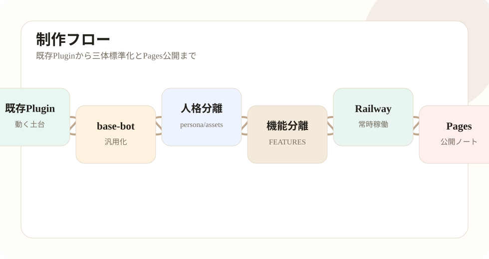

第01回：動いているPluginをbase-botへ分岐する
最初に行ったのは、既に動いていたPluginを直接改造しないための分岐です。動いているものをそのまま触ると、何かが壊れた時に元の状態へ戻しにくくなります。そこで、まず既存Pluginを別フォルダへコピーし、base-botとして扱える作業場を作りました。
この段階では、人格分離や機能分離を急ぎません。最初に確認するのは、コピーした状態でGoのビルドが通るか、cmd配下の確認コマンドが壊れていないか、internal配下の依存が欠けていないかです。
作業の考え方は、動くものを小さく安全に変えることです。いきなり理想構造へ作り直すのではなく、動く土台を残しながら一つずつ外部化していきます。
ここでできたbase-botは、後の虚無猫、フジタ、空想アイへつながる共通テンプレの原型になりました。ただし、最終的な本番運用ではbase-botそのものをRailwayへ載せるのではなく、専用repoへ分岐したものを使います。

確認ポイント
- この段階で何を確認すべきかを明確にする。
- 秘密値や実ログを公開記事に含めない。
- 問題が起きた場合は、前段階へ戻って切り分ける。
- 作業後は必ずGit status、ビルド、対象ページ表示を確認する。
コピー後に確認すること
コピー後は、まずGitの向き先、go.mod、cmd配下の入口、internal配下の依存関係を確認します。ここで焦って人格追加やUI追加を始めると、元から壊れていたのか、自分の変更で壊したのかが分からなくなります。
git remote -v
go test ./...
go build ./cmd/plugin
go run ./cmd/configcheckbase-bot化の初期段階では、機能を増やすよりも「壊れていない土台」を作ることが成果です。この考え方は、後の三体標準化にもそのまま使えます。
実作業の分解
既存Pluginをコピーする時は、コピー元を壊さないことを最優先にします。コピー先でビルドが通るまで、人格追加や機能追加はしません。Goの依存が壊れていないか、cmd配下が揃っているか、internal配下のimportが解決できるかを確認します。
この段階で作るbase-botは「完成品」ではなく「安全に分岐するための土台」です。後で専用repo化することを前提に、人格、素材、機能入口を切り出せるようにします。
この段階で大事なのは、作業結果を「動いた」「動かない」だけで判断しないことです。どの入力に対して、どの設定を読み、どの外部サービスへ接続し、どのログへ残るのかを確認します。BOTは一度動くと自動で投稿・返信するため、目に見える成功よりも、誤作動しないための確認が重要です。
また、ローカルで成功した作業とRailwayで成功した作業は分けて扱います。ローカルでは.envを読みますが、本番ではRailway Variablesを読みます。ローカルではファイルが残っていても、本番ではVolumeがなければ再デプロイで状態が消える可能性があります。この差を毎回意識します。
作業後は、Gitの差分、ビルド結果、確認コマンド、必要ならブラウザ表示を確認します。特に公開ノート側では、HTMLのリンク切れ、スマホでの横はみ出し、モック画像の表示、詳細記事の前後ナビを確認します。